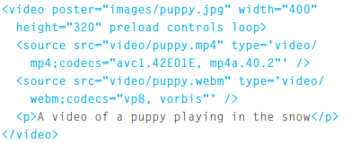

Foco do capítulo:
We then focus on how to add video and audio to your site,
using either the new HTML5 video and audio elements
or a hosted service (such as YouTube or SoundCloud). In this
chapter you will learn:
● How to use Flash in your web pages
● How to use HTML5 video and audio elements
● When to host your own video and audio and when to use a
service such as YouTube
banho
Se quisermos podemos adicionar mais de uma fonte de vídeo. basta informar o source>, veja o exemplo abaixo
